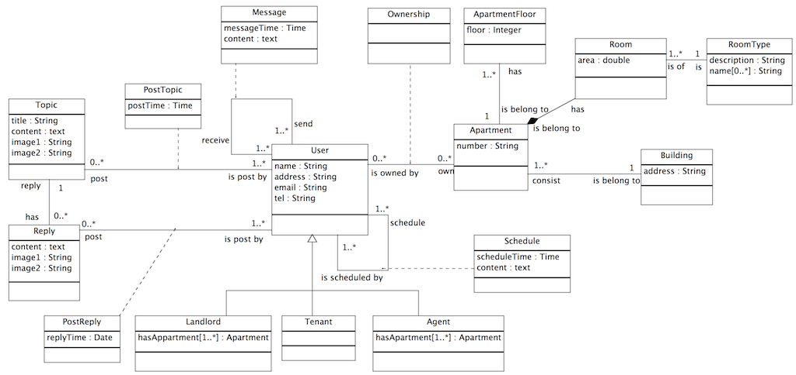

Real Estate System: An Android application based on OData protocol with MySQL database
Real Estate System(RES) is the Oh!Data’s project of CS5200: Introduction to Database Systems 2013 Fall.
Group: Oh!Data from College of Computer and Information Science, Northeastern University
This article deals with the overall and detailed introduction of the Real State System Application on Android, which is based on the OData Protocol. The idea is motivated by getting rid of hash time struggling with finding suitable place to live in. As a full-service real estate application, it offers first hand housing information. No matter the user is a first-time buyer, or one interested in trading, relocating, and renting, the platform will always provide exceptional service: scheduling meetings, finding related information, adding records and posting topics. The framework of the application consists of the server-side constructed by ODdata producer, the MySQL database and the client-side operated by Android application. The method implemented to solve the problem of mapping relation is to take advantage of OData4J, which acts as a Java framework implementing the OData protocol for both the consumer and the producer. The article goes through all above in consecutive parts as follow.
When people, especially international students, come to live in a new city, the first problem they have to deal with is probably where to live. New residents always find it hard to find an ideal house or apartment. Having suffered from the same situation, our team members want to help people solve this problem.
Use cases: the requirements for the software being produced.
The UML diagram of database

You can get source code from our project’s Github page.
This is our project’s framework. On client-side, we run an Android application as a OData consumer. OData consumers are simply applications that consume data exposed using the OData protocol. On server side, we put a MySQL database and a Java program as a OData producer. OData producers are programs that running on server which can produce OData service and respond to consumers.
We use OData4J to implement both OData producer (server-side) and OData consumer (client-side). OData4J is a Java framework that implements the OData protocol for both consumers and producers.
User Table
create table User(
id int primary key,
name varchar(255) not null,
phone varchar(255) not null,
address varchar(255),
email varchar(255),
type enum(‘Landlord’,’Tenant’,’Agent’));
The User table is one of the most important tables in our database, it stores all personal information of the user of our system. We choose id as the primary key, and force the name and phone field to be not null. Therefore, our system allows different people to have the same name. The phone number can not be null so that everyone can get connected. We have three types of users : Landlord,Tenant and Agent, corresponding to the real life.
Apartment Table:
create table Apartment (
id int primary key,
number varchar(255) not null,
address varchar(255),
area int not null,
owner int references User(id));
The Apartment table stores the entire house and apartment’s information. Each apartment has an id as the identifier. We force the area to be not null, because when we looking for some houses, the area of the apartment is a big concern. We have a foreign key owner referencing to the User’s id.
Topic Table:
create table Topic(
id int primary key,
title varchar(255) not null,
uid int references User(id),
content text,
image1 varchar(255),
image2 varchar(255));
Our system helps people to rent or lease houses. In the "Topic" table, we store all the rent or lease information. We use a id as the primary key, and force the title of the rent or lease information to be not null. It is much better to use image to show parts of the house, so we allow users to put some image to the database and store the URL address of the image. The Topic table has a foreign, uid, which can identify the poster of the information of the house.
Reply Table:
create table Reply(
id int primary key,
uid int references User(id),
tid int references Topic(id),
content text not null,
rtime date not null,
image1 varchar(255),
image2 varchar(255));
After the user posts information about the house or apartment, other users may be interested in the information, so we introduce a "Reply" table to allow user to reply to topics. We have id as the primary key, and uid and tid are foreign keys. The uid can identify which user post this reply and tid can specify which topic the reply belongs to. We also introduce the reply time. As the same with the Topic table, we encourage users to put some images to make the reply more interesting.
Message Table:
create table Message(
id int primary key,
mfrom int references FromUser(id),
mto int references ToUser(id),
content text not null,
mtime date not null);
The Message enables our users to communicate with each others. Each message has its own id as an identity. A message must contain informations of the sender and receiver. When sending the message, we add the message time so it feels more comfortable with our message system.
Schedule Table:
create table Schedule(
id int primary key,
sfrom int references FromUser(id),
sto int references ToUser(id),
content text not null,
stime date not null);
Our system enables users to make an appointment to see the house in the real world. The major function of the Schedule is to help store the appointment information. A schedule should contain two users: Agent or Landlord may invite Tenant to see the house, and Tenant may ask the Agent or Landlord whether and when they can see the house.
FromUser Table and ToUser Table:
create table FromUser(
id int primary key references User(id));
create table ToUser(
id int primary key references User(id));
We also create two triggers in database:
create trigger grant_access after insert on User
for each row begin
insert into FromUser set id = new.id;
insert into ToUser set id = new.id;
end
create trigger revoke_access after delete on User
for each row begin
delete from FromUser where FromUser.`id` = old.`id`;
delete from ToUser where ToUser.`id` = old.`id`;
end
Whenever create a new user, the database system would help us to insert the same record into the FromUser and ToUser table
Building our OData endpoint includes two steps:
OData4j-bundle-0.7.jar from OData4J distribution archive to build pathJPAProducer to expose an existing JPA 2.0 entity model.To implement our Android application, we divide it into two parts. One part is Android UI framework, including pictures, widgets, etc.. We use Android SDK to build our application.
Another part is utility, including a OData consumer, which use OData protocol to connect with server and access to database.
OData4j-clientbundle-0.7.jar from OData4J distribution archive to build pathIn this section, we will show our project’s imported functions by displaying following examples.
To test our project, we wrote programs to generate information randomly and insert these records into database.
When an user wants to sign up, one has to enter one's basic information, including username, email address, password and so on. After the “Sign Up” button is pressed, system will add this user to User table. All texts will be removed upon the "Reset" button, the user is hence able to re-enter. Besides, the application will remind the user to enter enough information if there are any blanks left.

Users have to enter username and password, then press “Login” button to login the application.

An user can add apartments according to his/her needs. One has to provide information of the apartment and then press the “Add” button. By doing so, system will add this apartment to Apartment table.
An user can find apartments that he/she is interested in. To find an apartment, one needs to enter conditions such as address (we support approximate query), area or both address and area, and then press the “Search” button. System will search all apartments in database and return a list of qualified apartments. The user can press any specific apartment in the list to view more information about it.

An user can schedule a meeting with other users. To schedule a meeting, one has to enter username of the user he/she wants to meet with, along with the expected time and brief content, and then press the “Add” button. System will add meeting information to Schedule table.

An user can view all his/her meetings, including meetings he/she initiated and those scheduled by other users. One can click on any specific meeting in the list to view more information about it.
An user can send messages to other users. To send a message, one needs to provide username of the receiver as well as the content of the message. After “Send” button is pressed, system will add this message into Message table.
An user can view all his/her messages, both the sent ones and received ones. One can click on any specific message in the message list to view more information about it.

An user can view all topics posted in the forum. If one is interested in any of them, he/she can click on it to view more information about it, including name of the poster and all corresponding replies.

An user can find topics that he/she is interested in by entering conditions such as topic (we support approximate query) or username of the poster, and then pressing the “Search” button. System will search all topics in database and return a list of qualified topics. User can click on any pacific topic in the list to view more information it.
An user is also free to post a new topic. To post a new topic, one needs to enter title and content of the topic. After the “Add” button is pressed, system will save this topic in Topic table.
We proposed a powerful new tool for Real Estate System, a platform for users find. After information gathering and discussion, we decided to use JPA to map relation and Java objects and use ODdata4J to construct OData producer and consumer. Compared with original proposal, we reconstructed the database for the sake of satisfying the perfect mapping and function implementation. We also removed some functions, such as updating user information and apartment information, due to limited time. Besides, we have implemented the major part of our requirements.
We can improve our project in the following ways: